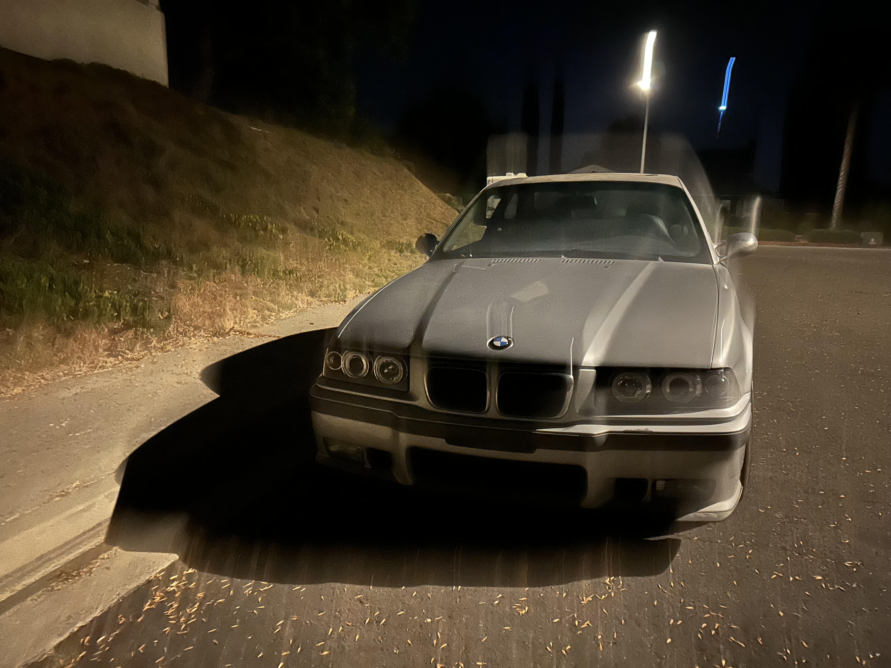
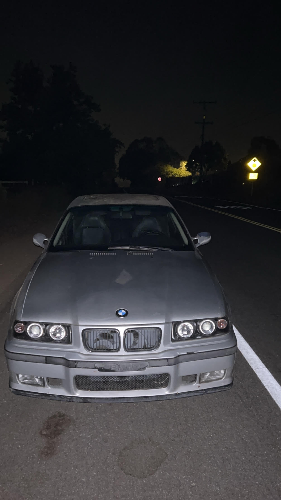
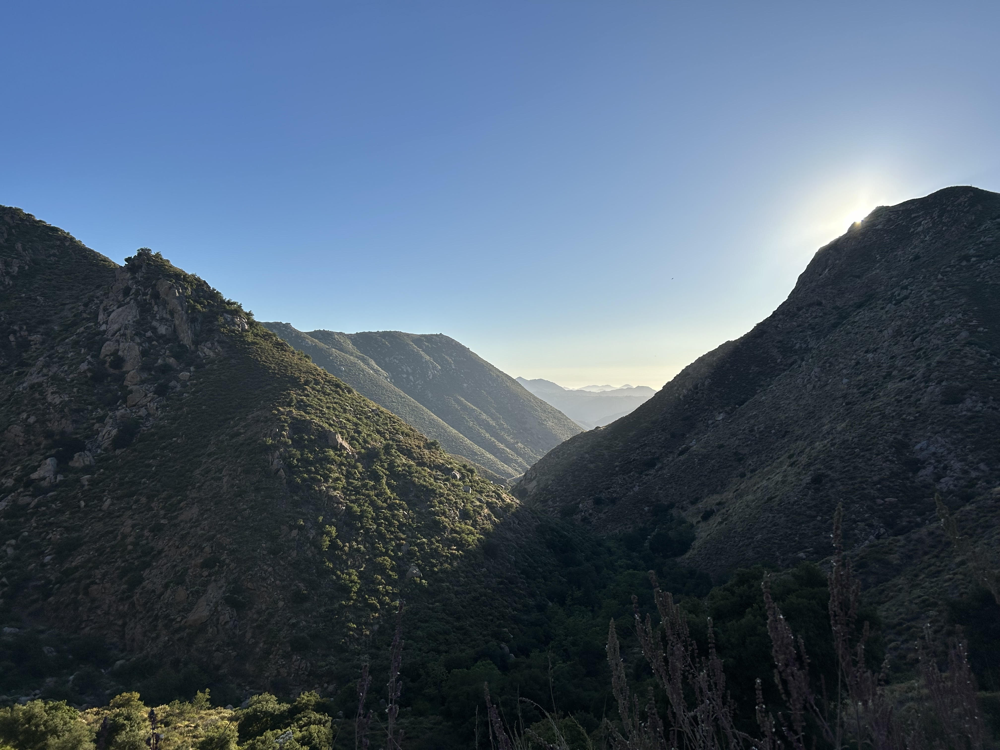

Some of the things i like to do you can find in Hobbies page
My name is Colin Cribbins i was born in Poway, CA and im now 20 years old. My top three favorite places to eat are Board and Brew, Rubios, and In-N-Out. To the right of this text is the car i drvie. My uncle is currently letting me drive it as long as i take care of it. The car is a 98 E36 M3 coupe its got a 3.2 liter Inline 6 it puts out 240 horse power with 269lbft of torque while weighing at 3,175 lbs which in kilograms that is 1,565. Ive had it for around 5 or 6 months by now and since then ive practically driven it everyday which has taught me manual.

Around three months ago i went on my favorite hike called Eagle Peak which leads into the Three Sisters Falls in Descanso. Its a 4.2 mile hike there and back but it is very steep hike. It was around a 2 hour drive there and when we got there it was around 2pm, I was with three of my friends and it took us like an hour and a half to get to the falls and we stayed there to swim for about 3-4 hours. It was very beautiful. I would totally do it again but early in the morning because it was extremely hot and theres practically no shade for the first part of the hike.